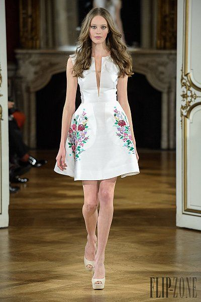
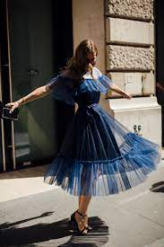
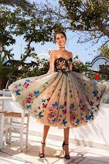
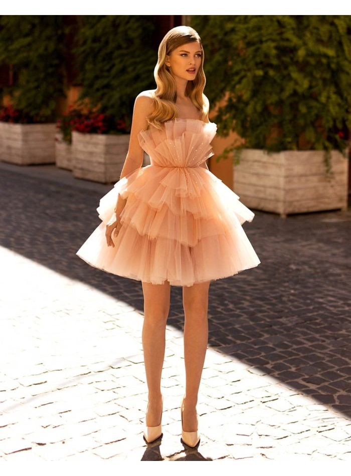
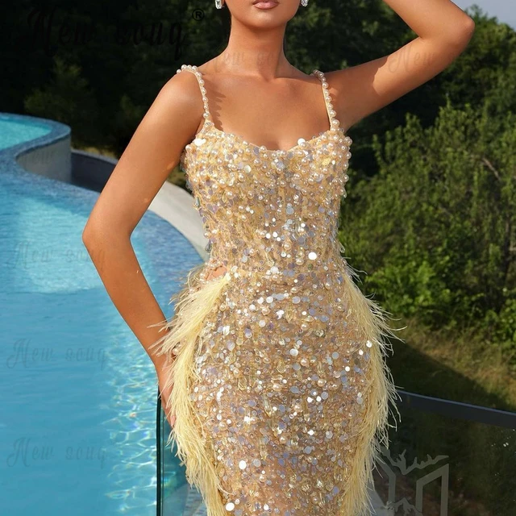

GIVENCHY
Catalogo
Vestidos de Fiesta
Vestidos de Gala
Trajes de Gala
Vestidos de Coctel
Calzado de Caballero
Calzado de Dama
Vestidos de Coctel

-Vestido Corto
-Con escote en v sin mangas con tirantes
gruesos, plizado, con diseño de rosas rojas
-Colores Disponibles
- Azul
- Negro
- Blanco
- Beigh

-Vestido Tres cuatos
-Con escote recto sin mangas, plizado, con
vuelos en la parte superior del escote y en la
parte inferior de la falda
-Colores Disponibles
- Azul
- Amarillo
- Rosa
- Rojo

-Vestido tres cuartos
-Escote en forma de corazon, con diseño de
flores negras, sin mangas, falda plizada y
Diseños de mariposas de colores a su alrededor
-Colores Disponibles
- Turquesa
- Beigh
- Coral
- Rosa

-Vestido Corto
-Con escote recto, falda plizada con tres
capas del mismo color, marcando cintura
-Colores Disponibles
- Coral
- Amarillo
- Verde
- Gris

-Vestido Tres Cuartos
-Con escote, tirantes de Perlas Blancas,
vestido recto de lentejuelas y perlas
blancas, con plumas del mismo color a los costados
-Colores Disponibles
- Blanco
- Negro
- Verde Hade
- Tornasol
- Café